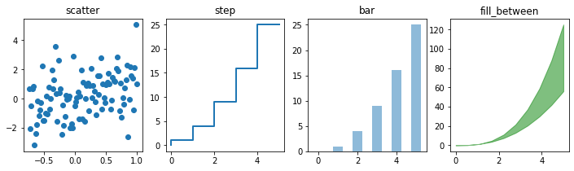

Introduction to Jupyter#
What is Jupyter?#
A web app for interactive Python in a browser
Jupyter offers a number of benefits for researchers in many fields, including:
- Live coding: Make changes and see the effects in real-time.
- Instant visualization: Charts and graphics render quickly in a browser window.
- Sharable: Notebooks can be copied and sent to others, or multiple users can edit a single shared notebook.
- Reproducible: Create a shareable environment with pinned Python and scientific library versions.
- Customizable: Many configuration options, extensions, and libraries are available.
- Not just for Python: Supports many other languages (including R, Julia, and many others.)
- See https://github.com/jupyter/jupyter/wiki/Jupyter-kernels for examples.
Example Notebook Code#
With the appropriate libraries installed into the Jupyter environment, the following code can be placed in one cell in a notebook, or split across multiple cells, and executed to produce quick graphs:
import chart_studio.plotly as py
import plotly.figure_factory as ff
import pandas as pd
import numpy as np
import matplotlib
import matplotlib.pyplot as plt
x = np.linspace(0, 5, 10)
y = x ** 2
n = np.array([0,1,2,3,4,5])
xx = np.linspace(-0.75, 1., 100)
fig, axes = plt.subplots(1, 4, figsize=(12,3))
axes[0].scatter(xx, xx + 1.25*np.random.randn(len(xx)))
#axes[0].scatter(xx, xx + 0.25*np.random.randn(len(xx)))
axes[0].set_title("scatter")
axes[1].step(n, n**2.0, lw=2)
axes[1].set_title("step")
axes[2].bar(n, n**2, align="center", width=0.5, alpha=0.5)
axes[2].set_title("bar")
axes[3].fill_between(x, x**2.5, x**3, color="green", alpha=0.5);
axes[3].set_title("fill_between");

Jupyter Terminology#
Jupyterhub#
This is the multi-user "backend" server. The "Hub" allows users to login, then launches the single-user Jupyter server for them. Hubs are usually installed and managed by system administrators, not Jupyter users.
A Jupyterhub server (kestrel-jhub) is available on Kestrel for use with your HPC data. More on KJHub later in this document.
Jupyter/Jupyter Server/Notebook server#
The single-user server/web interface. Use to create, save, or load .ipynb notebook files. This is what users generally interact with.
Jupyter Notebook#
A Notebook is an individual .pynb file. It contains your Python code and visualizations, and is sharable/downloadable.
Jupyter Lab#
A redesigned web interface for your Jupyter Notebook Server - "Notebooks 2.0". Preferred by some, and promoted as the next evolution of Notebooks. Lab has many new and different extensions, but many are also not compatible between Notebook and Lab. Lab is still under development, so is lacking some features of "classic" notebooks.
Kernel#
Kernels define the Python environments used by your notebooks. Derived from ipykernel, a predecessor project to Jupyter, and you may see Jupyter kernels referred to as "ipykernels". Custom kernels require the "ipykernel" package installed in your Jupyter conda environment.
More on kernels later.
JupyterHub Service on Kestrel (KJHub)#
The NREL HPC team runs a JupyterHub service for HPC users to quickly access notebooks and data stored on Kestrel, Kestrel-JHub (KJHub.)
KJHub is available from the NREL VPN (onsite or offsite) for internal NREL users.
This service is not directly accessible externally for non-NREL HPC users. However, it may be reached by using the HPC VPN, or by using a FastX Remote Desktop session via the DAV nodes.
The JupyterHub service is accessible via web browser at https://kestrel-jhub.hpc.nrel.gov
JupyterHub Advantages:#
- Fast and easy access to notebooks with no setup.
- Use regular Kestrel credentials to log in.
- Great for simple tasks, including light to moderate data processing, code debugging/testing, and/or visualization using basic scientific and visualization libraries.
JupyterHub Disadvantages:#
- Limited resources: KJHub is a single node with 128 CPU cores and 512GB RAM.
- Managed usage: Up to 8 cores/100GB RAM per user before automatic throttling will greatly slow down processing.
- Competition: Your notebook competes with other users for CPU and RAM on the KJHub node.
- Slow updates: A limited list of basic scientific libraries are available in the default notebook kernel/environment.
Simple Instructions to access JupyterHub:#
- Visit https://kestrel-jhub.hpc.nrel.gov in a web browser and log in using your HPC credentials.
KJHub opens a standard JupyterLab interface by default. Change the url ending from "/lab" to "/tree" in your web browser to switch to the classic Notebooks interface.
Using a Compute Node to Run Your Own Jupyter Notebooks#
Kestrel supports running your own Jupyter Notebook server on a compute node. This is highly recommended over KJHub for advanced Jupyter use and heavy computational processing.
Advantages:#
- Custom conda environments to load preferred libraries.
- Full node usage: Exclusive access to the resources of the node your job is reserved on, including up to 104 CPU cores and up to 240GB RAM on Kestrel CPU nodes and up to 2TB RAM on Kestrel bigmem nodes. (See the system specifications page for more information on the types of nodes available on Kestrel.)
- No competing with other users for CPU cores and RAM, and no Arbiter2 process throttling.
- Less than a whole node may be requested via the shared node queue, to save AUs.
Disadvantages:#
- Must compete with other users for a node via the job queue.
- Costs your allocation AU.
Launching Your Own Jupyter Server on an HPC System#
Before you get started, we recommend installing your own Jupyter inside of a conda environment. The default conda/anaconda3 module contains basic Jupyter Notebook packages, but you will likely want your own Python libraries, notebook extensions, and other features. Basic directions are included later in this document.
Internal (NREL) HPC users on the NREL VPN, or external users of the HPC VPN, may use the instructions below.
External (non-NREL) HPC users may follow the same instructions, but please use kestrel.nrel.gov in place of kestrel.hpc.nrel.gov.
Using a Compute Node to run Jupyter Notebooks#
Connect to a login node and request an interactive job using the salloc command.
The examples below will start a 2-hour job. Edit the <account> to the name of your allocation, and adjust the time accordingly. Since these are interactive jobs, they will get some priority, especially if they're shorter, so only book as much time as you will be actively working on the notebook.
On Kestrel:#
Connect to the login node and launch an interactive job:
[user@laptop:~]$ ssh kestrel.hpc.nrel.gov
[user@kl1:~]$ salloc -A <account> -t 02:00:00
Starting Jupyter Inside the Job#
Once the job starts and you are allocated a compute node, load the appropriate modules, activate your Jupyter environment, and launch the Jupyter server.
[user@x1000c0s0b0n1:~]$ module load anaconda3
[user@x1000c0s0b0n1:~]$ source activate myjupenv
[user@x1000c0s0b0n1:~]$ jupyter-notebook --no-browser --ip=$(hostname -s)
Take note of the node name that your job is assigned. (x1000c0s0b0n1 in the above example.)
Also note the url that Jupyter displays when starting up, e.g. http://127.0.0.1:8888/?token=<alphabet soup>.
The <alphabet soup> is a long string of letters and numbers. This is a unique authorization token for your Jupyter session. you will need it, along with the full URL, for a later step.
On Your Own Computer:#
Next, open an SSH tunnel through a login node to the compute node. Log in when prompted using your regular HPC credentials, and put this terminal to the side or minimize it, but leave it open until you are done working with Jupyter for this session.
[user@laptop:~]$ ssh -N -L 8888:<nodename>:8888 username@kestrel.hpc.nrel.gov
Open a Web Browser#
Copy the full url and token from Jupyter startup into your web browser. For example:
http://127.0.0.1:8888/?token=<alphabet soup>
Using a Compute Node - The Easy Way#
Scripted assistance with launching a Jupyter session on Kestrel is available.
Internal NREL Users Only: pyeagle#
The pyeagle package is available for internal users to handle launching and monitoring a jupyter server on a compute node. This package is maintained by an NREL HPC user group and was originally written for use with Eagle, but now supports Kestrel.
Auto-launching on Kestrel with an sbatch Script#
There are scripts written for launching a Jupyter session inside of a slurm job.
Full directions and scripts included in the Jupyter repo.
Standard Jupyter session launch with full CPU request
Download sbatch_jupyter.sh and auto_launch_jupyter.sh
Edit sbatch_jupyter.sh to change:
--time=<time_request>
--account=<project_handle>
...
...
source activate /home/$USER/.conda-envs/<MY_ENVIRONMENT> # Replace <MY_ENVIRONMENT> with the name of your conda environment
Edit auto_launch_jupyter.sh to include your sbatch_jupyter script:
RES=$(sbatch sbatch_jupyter.sh)
Run auto_launch_jupyter.sh and follow the directions that come up on your terminal window.
Standard Jupyter session launch in the shared partition with partial CPU request
Download shared_sbatch_jupyter.sh and auto_launch_jupyter.sh
Edit shared_sbatch_jupyter.sh to change:
--time=<time_request>
--account=<project_handle>
...
--cpus-per-task=<CPUs_request>
--mem-per-cpu=<CPU_memory_request> # Default is 1G per core
...
...
source activate /home/$USER/.conda-envs/<MY_ENVIRONMENT> # Replace <MY_ENVIRONMENT> with the name of your conda environment
Edit auto_launch_jupyter.sh to include your sbatch_jupyter script:
RES=$(sbatch shared_sbatch_jupyter.sh)
Run auto_launch_jupyter.sh and follow the directions that come up on your terminal window.
Standard Jupyter session launch with GPU request
Download gpu_sbatch_jupyter.sh and auto_launch_jupyter.sh
Edit gpu_sbatch_jupyter.sh to change:
--time=<time_request>
--account=<project_handle>
...
--cpus-per-task=<CPU_request>
--gres=gpu:<GPU_request>
export CUDA_VISIBLE_DEVICES=0 # if GPUs request is 1, then set =0
# if GPUs request is 2, then set =0,1
# if GPUs request is 3, then set =0,1,2
# if GPUs request if 4, then set =0,1,2,3
...
...
source activate /home/$USER/.conda-envs/<MY_ENVIRONMENT> # Replace <MY_ENVIRONMENT> with the name of your conda environment
Edit auto_launch_jupyter.sh to include your sbatch_jupyter script:
RES=$(sbatch gpu_sbatch_jupyter.sh)
Run auto_launch_jupyter.sh and follow the directions that come up on your terminal window.
Reasons to Not Run Jupyter Directly on a Login Node#
Data processing and visualization should be done via either KJHub or a compute node.
Login nodes are highly shared and limited resources. There will be competition for CPU, RAM, and network I/O for storage, and Arbiter2 software will automatically throttle moderate to heavy usage on login nodes, greatly slowing down your processing.
Custom Conda Environments and Jupyter Kernels#
On Kestrel, the module 'anaconda3' is available to run the conda command and manage your environments.
As an alternative, the module 'mamba' is available instead. Mamba is a conda-compatible environment manager with very similar usage. Most conda commands in this documentation may be used with mamba instead and they may generally be considered interchangeable.
Creating a Conda Environment#
To add your own packages to conda on Kestrel:
Create an environment and install the base jupyter packages. Then activate the environment and install other libraries that you want to use, e.g. scipy, numpy, and so on.
conda create -n myjupyter -c conda-forge jupyter ipykernel
source activate myjupyter
conda install -c conda-forge scipy numpy matplotlib
Add Custom iPykernel#
A kernel is what allows Jupyter to use your customized conda environment inside Jupyter, in a notebook. Use ipykernel to build your kernel. Inside your custom conda environment, run:
python -m ipykernel install --user --name=myjupyter
If you already have a Jupyter server running, restart it to load the new kernel.
The new kernel will appear in the drop-down as an option to open a new notebook.
You can have multiple kernels, allowing you to load different conda environments for your different projects into Notebooks.
Jupyter Kernel Management#
Use the kernelspec list command inside your Jupyter conda environment to see what ipykernels you have installed:
jupyter kernelspec list
To remove an old kernel, use the kernelspec remove command:
jupyter kernelspec remove myoldjupyter
Magic Commands#
Magic commands are "meta commands" that add extra functionality to Jupyter.
Magic commands begin with % or %%.
Example Magic Commands#
* %lsmagic - list all magic commands
* %run _file.py_ - run an external python script
* %%time - placed at top of cell, prints execution time
* %who - list all defined variables in notebook
%lsmagic
Available line magics:
%alias %alias_magic %autoawait %autocall %automagic %autosave %bookmark %cat %cd %clear %colors %conda %config %connect_info %cp %debug %dhist %dirs %doctest_mode %ed %edit %env %gui %hist %history %killbgscripts %ldir %less %lf %lk %ll %load %load_ext %loadpy %logoff %logon %logstart %logstate %logstop %ls %lsmagic %lx %macro %magic %man %matplotlib %mkdir %more %mv %notebook %page %pastebin %pdb %pdef %pdoc %pfile %pinfo %pinfo2 %pip %popd %pprint %precision %prun %psearch %psource %pushd %pwd %pycat %pylab %qtconsole %quickref %recall %rehashx %reload_ext %rep %rerun %reset %reset_selective %rm %rmdir %run %save %sc %set_env %store %sx %system %tb %time %timeit %unalias %unload_ext %who %who_ls %whos %xdel %xmode
Available cell magics:
%%! %%HTML %%SVG %%bash %%capture %%debug %%file %%html %%javascript %%js %%latex %%markdown %%perl %%prun %%pypy %%python %%python2 %%python3 %%ruby %%script %%sh %%svg %%sx %%system %%time %%timeit %%writefile
Automagic is ON, % prefix IS NOT needed for line magics.
Shell Commands#
You can also run shell commands inside a cell. For example:
!conda list - see the packages installed in the environment you're using
!pwd
!ls
/home/username/jup
auto_launch_jupyter.sh Jupyter Presentation.ipynb slurm-6445885.out
geojsondemo.ipynb old sshot1.png
Interesting Graphs.ipynb sbatch_jupyter.sh sshot2.png
jup-logo.png slurm